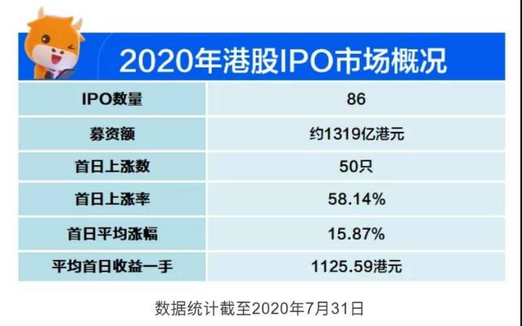

6.1.1.1. 打新秘籍|无脑赚钱利器，港股打新带你穿越牛熊
6.1.1.1.1. 吹个牛-2万年化70%
从过去三年数据来看，假设开设一个港股账户，投入2万港币本金，平均每年可以通过港股打新获利1.5万港币，平均年化收益达70%
6.1.1.1.2. 为什么港股能赚钱
「港股打新」是通过参与香港证券交易所新股申购，并利用港交所上市新股申购一手的高中签率政策，从而获得高投资回报的理财策略。港股打新不是稳定盈利，更不是暴利，只是从概率上来讲是能赚钱的。
这个世界上并不存在稳定暴利的投资品种，如果有，参与人数多了就会不断摊薄收益。
但是港股打新一定是能赚钱的，为啥呢？
因为从逻辑上来讲，公司 IPO 发行新股，一般是要给一二级市场预留一些价差，也就是所谓的「新股红利」，不然吸引不到投资者。而且上市就破发，上市公司脸面上也不太好看。牛牛与牛友们打新赚的，就是这个一二级市场价差的钱。
过去几年以来，无脑一手的玩法很吃香，港股打新也被称为无脑赚钱利器，综合下来年化收益至少是个百分之六七十。
而且，这个策略在2019年，也表现得相当亮眼。
6.1.1.1.3. 港股打新战绩回顾（补充了热门中概股首日及暗盘涨幅）
截至2020年7月底，年初至今在香港挂牌的上市公司一共有86家，首日上涨比例约为58.14%，首日平均涨幅15.87%，累计一手收益超过9万港元，其中欧康维视、思摩尔国际等明星新股首日涨幅超过150%，沛嘉医疗、康方生物等大肉签一手收益也都在8000港元以上。

2020年上半年，虽然疫情导致资本市场出现空前的巨幅波动，但香港 IPO 发行依旧强劲。
网易（首日5.69%，暗盘7.07%）、京东（首日3.54%，暗盘7.34%）赴港二次上市开启了中概股回归潮。医疗医药、生物科技、TMT 新股不断引发新的打新热潮。
纵观2020年下半年，农夫山泉、百胜集团（首日-5.29%，暗盘-2.91%）、蚂蚁集团来势汹汹，加上预期更多中概股将回港上市，相信下半年港股IPO市场会更加火热，收益率依然稳健。
6.1.1.1.4. 假如你有两万元
6.1.1.1.4.1. 打新
一个账户一般存放的资金在2万元左右即可满足打新的需求，扣除交易费用以及风险损失，真实收益率应该在60%左右，还是非常的诱人了，近几年来港股打新的人也越来越多。
相比于A股来说，港股打新股，门槛极低，不需要市值，有现金就能打。并且，港股则更顾及散户利益，优先保证一户一签，所以按照最低股数只打一手，中签率最高，平均中签率有60%〜70%，平均首曰最高涨幅达到28%。
如果假设每只新股都申购后并且中签，单账户平均一手收益可以为6.8万元；以2万本金乘以一手中签概率大致计算出19年单个账户盈利的平均盈利金额为1.2万元。
2020年第一季度，港股IPO顶着巨大压力，仍保持着平均3.17%的首日涨幅，可以说是穿越牛熊，依然可以盈利
6.1.1.1.4.2. 港股恒指
2019年港股恒指整体涨9.07%。不过结构分化严重，消费、医药、科技等行业龙头股表现突出，对牛友们选股以及把握机遇的要求较高。2020年受疫情及美股巨大波动的影响，第一季度，港股恒生指数累计下跌超16%。
6.1.1.1.4.3. 基金
数据显示，2019年，股票型、混合型、债券型、货币型四大品种基金平均收益率分别达到 38.47%、32.01%、5.86%、2.54%。在2020年，基金同样也是风险与、收益并存，随着美股一月内多次熔断，全球恐慌情绪蔓延，今年以来基金收益也大幅回落，偏股型权益基金仍需关注风险事件。值得注意的是，主动股票型基金平均收益率-0.50%，并未能够取得正收益。
6.1.1.1.5. 结语
综合以上几种投资方式的收益和复杂程度来说，打新真的是以最简单的操作博取最高的收益率的投资选择；如果各位牛友可以对新股加以基本的预测和筛选，收益率或许会更上一层。